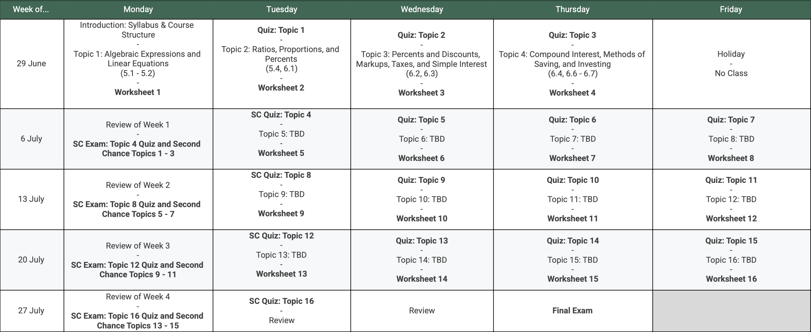

This is the course webpage for MATH 1070Q: Mathematics for Business and Economics for the Summer 2026 CAPS/SSS program.
This website is under construction.
Dion Mann
Lectures will be held Monday through Friday from 8:00 AM to 9:50 AM in SHH 105. Office hours will be held 3:00 PM - 4:30 PM (Monday & Tuesday) in MONT 213, or by appointment.
This course is an introduction to applied finite mathematics with applications in business and economics. Topics include linear equations and inequalities, matrices, systems of linear equations, linear programming, sets, counting, probability, statistics, and the mathematics of finance.
The style of instruction is based on "Second Chance Grading" due to Oscar E. Fernandez (doi.org/10.1080/10511970.2020.1772915). You will be graded on each "topic," the grade of which will be the maximum of your score between the topic's quiz and the Second Chance exam (see syllabus below).
We will be using the free textbook "Contemporary Mathematics." Access Textbook (via openstax.org).
Below is a tentative schedule which will be updated at least weekly.
